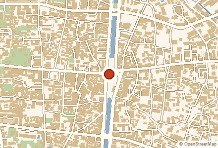

Thai Language for Beginners
🕒 ทุกวันจันทร์ 13:00 น. · ครั้งต่อไป 5 ตุลาคม · Every Monday at 13:00 · next on 5 Oct
📍 มหาวิทยาลัยพายัพ · Payap University 📍 (ตำแหน่งโดยประมาณ) · (approximate spot)
งานที่กำลังจะถึงในเชียงใหม่ ทั้งงานประจำสัปดาห์และงานครั้งเดียว รวบรวมจากปฏิทินสาธารณะ ผูกกับสถานที่ในสารบัญเมื่อจับคู่ได้ · What is on in Chiang Mai — weekly regulars and one-offs alike, gathered from public calendars and tied to the places in the directory wherever a confident match exists.
แต่ละจุดคือสถานที่จัดงาน ขนาดวงตามจำนวนงาน · กรอบเส้นประคือคูเมือง · Each dot is a venue, sized by how many events it holds · the dashed square is the old city moat
🕒 ทุกวันจันทร์ 13:00 น. · ครั้งต่อไป 5 ตุลาคม · Every Monday at 13:00 · next on 5 Oct
📍 มหาวิทยาลัยพายัพ · Payap University 📍 (ตำแหน่งโดยประมาณ) · (approximate spot)
🕒 ทุกวันจันทร์ 15:30 น. · ครั้งต่อไป 5 ตุลาคม · Every Monday at 15:30 · next on 5 Oct
📍 มหาวิทยาลัยพายัพ · Payap University 📍 (ตำแหน่งโดยประมาณ) · (approximate spot)
🕒 ทุกวันอังคาร 13:00 น. · ครั้งต่อไป 6 ตุลาคม · Every Tuesday at 13:00 · next on 6 Oct
📍 มหาวิทยาลัยพายัพ · Payap University 📍 (ตำแหน่งโดยประมาณ) · (approximate spot)
🕒 ทุกวันอังคาร 09:00 น. · ครั้งต่อไป 20 ตุลาคม · Every Tuesday at 09:00 · next on 20 Oct
📍 มหาวิทยาลัยพายัพ · Payap University 📍 (ตำแหน่งโดยประมาณ) · (approximate spot)
🕒 ทุกวันศุกร์ 13:00 น. · ครั้งต่อไป 4 กันยายน · Every Friday at 13:00 · next on 4 Sep
📍 มหาวิทยาลัยพายัพ · Payap University 📍 (ตำแหน่งโดยประมาณ) · (approximate spot)
🕒 ทุกวันศุกร์ 09:30 น. · ครั้งต่อไป 9 ตุลาคม · Every Friday at 09:30 · next on 9 Oct
📍 มหาวิทยาลัยพายัพ · Payap University 📍 (ตำแหน่งโดยประมาณ) · (approximate spot)
🕒 ทุกวันเสาร์ 10:00 น. · ครั้งต่อไป 12 กันยายน · Every Saturday at 10:00 · next on 12 Sep
📍 มหาวิทยาลัยพายัพ · Payap University 📍 (ตำแหน่งโดยประมาณ) · (approximate spot)

🕒 ทุกคืน จ–ส 21:00 น. · คืนต่อไป 31 สิงหาคม · Every Mon–Sat at 21:00 · next on 31 Aug
📍 สนามมวยเชียงใหม่ · Chiangmai Boxing Stadium
The stadium's own site lists dated fight nights, Monday–Saturday, 21:00–23:30 — Mon–Sat from 21:00. a fight ticket includes one free Muay Thai class (limited places daily) Board: fight_nights.json (verified 2026-08-19).

🕒 ทุกคืน จ–ส 21:00 น. · คืนต่อไป 31 สิงหาคม · Every Mon–Sat at 21:00 · next on 31 Aug
📍 สนามมวยท่าแพ · Thaphae Boxing Stadium 📍
"Every Mon to Sat. Show time 9.00-11.45 PM." — the stadium's own site — Mon–Sat from 21:00. VIP includes a drink Board: fight_nights.json (verified 2026-08-19).
🕒 31 สิงหาคม 2569 · 17:00 น. · 31 August 2026 · 17:00
📍 ยังไม่ระบุสถานที่ · venue not stated
Chiang Mai Professionals, Expats, and Digital Nomads Join WHATSAPP GROUP for info Join us for a weekly sunset walk through the beautiful Chiang Mai University (CMU) campus. This is a casual, recurring meetup designed for…
🕒 1 กันยายน 2569 · 18:00 น. · 1 September 2026 · 18:00
📍 ยังไม่ระบุสถานที่ · venue not stated
Chiang Mai Professionals, Expats, and Digital Nomads Dune Imperium Uprising is deep strategy game with Deck Building and worker placement. What’s that? No problem, we can teach you. We will play some starter games befor…
🕒 2 กันยายน 2569 · 10:00 น. · 2 September 2026 · 10:00
📍 มหาวิทยาลัยพายัพ · Payap University 📍 (ตำแหน่งโดยประมาณ) · (approximate spot)
🕒 2 กันยายน 2569 · 17:00 น. · 2 September 2026 · 17:00
📍 ยังไม่ระบุสถานที่ · venue not stated
Chiang Mai Professionals, Expats, and Digital Nomads Retro Recess presents: Loose-Leaf Playground, where writers get to practice. A relaxed, welcoming space where words get to play, and writers get to practice. Join us…
🕒 2 กันยายน 2569 · 18:00 น. · 2 September 2026 · 18:00
📍 ยังไม่ระบุสถานที่ · venue not stated
Questions That Matter (Free Weekly Wed 6pm Meetup Group) For most of human history identities were strictly ascribed to us by family, lineage, or geography. Today (especially in transient hubs like Chiang Mai) we seeming…
🕒 2 กันยายน 2569 · 18:00 น. · 2 September 2026 · 18:00
📍 ยังไม่ระบุสถานที่ · venue not stated
Chiang Mai Professionals, Expats, and Digital Nomads It’s Catan night baby! Games start about every hour or so. We have base Catan, Space Catan, cities & Knights even the newest Catan New Energies. Roll, trade, build and…
🕒 3 กันยายน 2569 · 10:00 น. · 3 September 2026 · 10:00
📍 มหาวิทยาลัยพายัพ · Payap University 📍 (ตำแหน่งโดยประมาณ) · (approximate spot)
🕒 3 กันยายน 2569 · 18:00 น. · 3 September 2026 · 18:00
📍 ยังไม่ระบุสถานที่ · venue not stated
Beyond Small Talk, Chiang Mai **Sex vs. Intimacy: What Are We Really Looking For?** **location : Spice Garden ( Aquarium Room)** **Sept 3 at 6pm .** What’s the difference between **having sex** and truly **being intimat…
🕒 3 กันยายน 2569 · 18:00 น. · 3 September 2026 · 18:00
📍 ยังไม่ระบุสถานที่ · venue not stated
Chiang Mai Professionals, Expats, and Digital Nomads We will be diving into medium to heavy weight Euro games. No dice just strategy! We change games weekly: some favorite… Terraforming Mars SETI Terra Mystica Ark Nova
🕒 3 กันยายน 2569 · 19:00 น. · 3 September 2026 · 19:00
📍 ยังไม่ระบุสถานที่ · venue not stated
Chiang Mai Professionals, Expats, and Digital Nomads # Advanced Ecommerce Seller Dinner Location: Nimman, Chiang Mai (The exact venue will be shared with confirmed attendees.) Please note: This is a self-paid dinner. Ea…
🕒 3 กันยายน 2569 · 20:30 น. · 3 September 2026 · 20:30
📍 ยังไม่ระบุสถานที่ · venue not stated
Chiang Mai Professionals, Expats, and Digital Nomads We’re Chiang Mai’s longest-running karaoke-loving community, bringing people together for good songs and a relaxed night out. **How it works** Choose any song you can …
🕒 9 กันยายน 2569 · 10:00 น. · 9 September 2026 · 10:00
📍 มหาวิทยาลัยพายัพ · Payap University 📍 (ตำแหน่งโดยประมาณ) · (approximate spot)
🕒 10 กันยายน 2569 · 18:00 น. · 10 September 2026 · 18:00
📍 ยังไม่ระบุสถานที่ · venue not stated
Beyond Small Talk, Chiang Mai # Chiang Mai Unfiltered: The Side No One Talks About 📅 **Thursday, September 10** ⏰ **6:00 PM – 8:00 PM** 📍 **Spice Garden, Chiang Mai** Chiang Mai is often described as paradise — affordab…
🕒 16 กันยายน 2569 · 10:00 น. · 16 September 2026 · 10:00
📍 มหาวิทยาลัยพายัพ · Payap University 📍 (ตำแหน่งโดยประมาณ) · (approximate spot)
🕒 18 กันยายน 2569 · 09:00 น. · 18 September 2026 · 09:00
📍 มหาวิทยาลัยพายัพ · Payap University 📍 (ตำแหน่งโดยประมาณ) · (approximate spot)
🕒 23 กันยายน 2569 · 10:00 น. · 23 September 2026 · 10:00
📍 มหาวิทยาลัยพายัพ · Payap University 📍 (ตำแหน่งโดยประมาณ) · (approximate spot)
🕒 24 กันยายน 2569 · 08:30 น. · 24 September 2026 · 08:30
📍 มหาวิทยาลัยพายัพ · Payap University 📍 (ตำแหน่งโดยประมาณ) · (approximate spot)
🕒 3 ตุลาคม 2569 · 10:00 น. · 3 October 2026 · 10:00
📍 มหาวิทยาลัยพายัพ · Payap University 📍 (ตำแหน่งโดยประมาณ) · (approximate spot)
🕒 7 ตุลาคม 2569 · 08:00 น. · 7 October 2026 · 08:00
📍 Integrated Tribal Development Foundation
🕒 8 ตุลาคม 2569 · 10:00 น. · 8 October 2026 · 10:00
📍 มหาวิทยาลัยพายัพ · Payap University 📍 (ตำแหน่งโดยประมาณ) · (approximate spot)
🕒 14 ตุลาคม 2569 · 10:00 น. · 14 October 2026 · 10:00
📍 มหาวิทยาลัยพายัพ · Payap University 📍 (ตำแหน่งโดยประมาณ) · (approximate spot)
🕒 21 ตุลาคม 2569 · 10:00 น. · 21 October 2026 · 10:00
📍 มหาวิทยาลัยพายัพ · Payap University 📍 (ตำแหน่งโดยประมาณ) · (approximate spot)
🕒 29 ตุลาคม 2569 · 10:00 น. · 29 October 2026 · 10:00
📍 มหาวิทยาลัยพายัพ · Payap University 📍 (ตำแหน่งโดยประมาณ) · (approximate spot)
🕒 2 พฤศจิกายน 2569 · 08:30 น. · 2 November 2026 · 08:30
📍 มหาวิทยาลัยพายัพ · Payap University 📍 (ตำแหน่งโดยประมาณ) · (approximate spot)
🕒 3 พฤศจิกายน 2569 · 09:15 น. · 3 November 2026 · 09:15
📍 Araksa Tea Garden
🕒 9 พฤศจิกายน 2569 · 08:00 น. · 9 November 2026 · 08:00
📍 Integrated Tribal Development Foundation
🕒 9 พฤศจิกายน 2569 · 18:00 น. · 9 November 2026 · 18:00
📍 NARIT Astronomy Park
🕒 11 พฤศจิกายน 2569 · 10:00 น. · 11 November 2026 · 10:00
📍 มหาวิทยาลัยพายัพ · Payap University 📍 (ตำแหน่งโดยประมาณ) · (approximate spot)
🕒 12 พฤศจิกายน 2569 · 10:00 น. · 12 November 2026 · 10:00
📍 มหาวิทยาลัยพายัพ · Payap University 📍 (ตำแหน่งโดยประมาณ) · (approximate spot)
🕒 17 พฤศจิกายน 2569 · 10:00 น. · 17 November 2026 · 10:00
📍 มหาวิทยาลัยพายัพ · Payap University 📍 (ตำแหน่งโดยประมาณ) · (approximate spot)
🕒 26 พฤศจิกายน 2569 · 09:00 น. · 26 November 2026 · 09:00
📍 มหาวิทยาลัยพายัพ · Payap University 📍 (ตำแหน่งโดยประมาณ) · (approximate spot)
ปฏิทินพูดถึงสถานที่เหล่านี้ แต่ยังไม่มีในสารบัญ — มดกำลังจะไปเก็บ ถ้าคุณรู้จัก บอกเราได้ · These venues appear in the calendars but are not in the directory yet — the ants are on their way. Tell us if you know them.
Attika Studio · Lecker Cafe & Bistro · Bua Bhat Factory · NARIT Astronomy Park · Araksa Tea Garden
รวบรวมเมื่อ 2026-08-30 จากปฏิทินสาธารณะ (Meetup, เรียนรู้ตลอดชีวิตพายัพ) ไม่ได้คัดสรรหรือรับรองงานใด งานอาจเปลี่ยนแปลงได้ กรุณาตรวจสอบกับผู้จัดก่อนเดินทาง · Harvested 2026-08-30 from public calendars (Meetup, Lifelong Learning Payap). Nothing here is curated or endorsed, and events change at short notice — check with the organiser before you travel.
🎉 เทศกาลประจำปี · Annual festivals · events.json · events.geojson · events.ics